MMSegmentation Framework และสถาปัตยกรรมแบบโมดูลาร์
เฟรมเวิร์กโอเพนซอร์สบน PyTorch สำหรับงาน Semantic Segmentation ที่ใช้ในการพัฒนา ฝึกสอน และส่งออกโมเดล SegFormer ในระบบ ScamGuard
MMSegmentation Framework และสถาปัตยกรรมแบบโมดูลาร์
เฟรมเวิร์กโอเพนซอร์สบน PyTorch สำหรับงาน Semantic Segmentation ที่ใช้ในการพัฒนา ฝึกสอน และส่งออกโมเดล SegFormer ในระบบ ScamGuard
1. ภาพรวมของ MMSegmentation
MMSegmentation เป็นส่วนหนึ่งของโครงการ OpenMMLab ที่รวบรวมอัลกอริทึมและสถาปัตยกรรมเครือข่ายประสาทเทียมชั้นนำสำหรับงานวิเคราะห์และแบ่งส่วนรูปภาพระดับพิกเซล (Pixel-level Semantic Segmentation) โครงสร้างของเฟรมเวิร์กถูกออกแบบให้เป็นโมดูลาร์ (Modular Architecture) ช่วยให้นักวิจัยและวิศวกร AI สามารถสลับ ปรับเปลี่ยน หรือผสมผสานชิ้นส่วนของโมเดลได้อย่างอิสระโดยไม่ต้องเขียนโค้ดโครงสร้างใหม่ทั้งหมด
2. โครงสร้างสถาปัตยกรรมแบบโมดูลาร์ (Modular Decomposition)
MMSegmentation แบ่งส่วนประกอบภายในของโมเดลออกเป็น 4 ชั้นหลัก:

ดู Mermaid source
flowchart TD
Input["Input Image (B x 3 x H x W)"] --> Backbone["Backbone (Feature Extractor)"]
Backbone --> Neck["Neck (Feature Aggregator - Optional)"]
Neck --> DecodeHead["Decode Head (Segmentation Prediction)"]
Backbone -.-> AuxHead["Auxiliary Head (Training Loss Only)"]
DecodeHead --> Output["Prediction Mask / Heatmap (B x C x H x W)"]
- Backbone (ส่วนสกัดลักษณะเด่น): ทำหน้าที่รับภาพนำเข้าและสร้าง Feature Maps หลายระดับความละเอียด (Multi-scale Feature Maps) ในระบบ ScamGuard ใช้ Mix Vision Transformer (MiT-B0 ถึง MiT-B2)
- Neck (ส่วนเชื่อมประสานลักษณะเด่น): ทำหน้าที่รวมลักษณะเด่นจากหลายชั้นความลึกของ Backbone เข้าด้วยกัน เช่น Feature Pyramid Network (FPN) เพื่อรวบรวมทั้งรายละเอียดระดับต่ำ (Low-level Details) และความหมายเชิงลึก (High-level Semantics)
- Decode Head (ส่วนถอดรหัสและทำนายผล): ส่วนปลายที่รับ Feature Maps ที่รวมแล้วมาแปลงเป็นหน้ากากการทำนายความน่าจะเป็นของแต่ละพิกเซล (Class Probability Mask) เช่น SegformerHead ที่ใช้ All-MLP Decoder น้ำหนักเบา
- Auxiliary Head (ส่วนเสริมการเรียนรู้): ชั้นประมวลผลเสริมที่ใช้เฉพาะช่วงการฝึกสอน (Training Phase) เพื่อช่วยส่งผ่าน Gradient ลึกลงไปยังชั้นต้นๆ ของ Backbone ผ่าน Auxiliary Loss ลดปัญหา Vanishing Gradient
3. กลุ่มอัลกอริทึมและวิวัฒนาการใน MMSegmentation
| กลุ่มอัลกอริทึม | โมเดลตัวอย่าง | จุดเด่น | ข้อจำกัดสำหรับงานตรวจจับภาพตัดต่อ |
|---|---|---|---|
| CNN-based | FCN, PSPNet, DeepLabV3+ | ประมวลผลแบบ Local Receptive Field มีความคงทนต่อการเลื่อนตำแหน่ง (Translation Invariance) | ขาดความสามารถในการจับความสัมพันธ์ระยะไกล (Long-range Context) ทำให้พลาดร่องรอยการผสมผสานแสงเงาที่ไม่สอดคล้องกันข้ามบริเวณ |
| Transformer-based | SegFormer, Swin Transformer, MaskFormer | ใช้กลไก Self-Attention เพื่อจับความสัมพันธ์ของบริบททั่วทั้งภาพพร้อมกันในทุกระดับความละเอียด | ต้องการการจัดเตรียมข้อมูลและการคำนวณที่เหมาะสม ซึ่งแก้ไขได้ด้วย Overlapping Tiling Inference |
4. การประยุกต์ใช้ในระบบ ScamGuard
ในระบบ ScamGuard ได้เลือกใช้ MMSegmentation ในการเทรนโมเดล SegFormer ดังนี้:
- การแก้ปัญหา Class Imbalance: บริเวณที่ถูกตัดต่อ มักมีสัดส่วนพื้นที่น้อยมากเมื่อเทียบกับพื้นที่ภาพทั้งหมด ระบบจึงกำหนด Loss Function แบบผสมผสานระหว่าง Cross-Entropy Loss และ Dice Loss:ภาษา text
L_total = α L_CE + β L_Dice
- **การส่งออกไปยัง ONNX Runtime:** โมเดลที่เทรนเสร็จสมบูรณ์จาก MMSegmentation จะถูกส่งออกเป็นไฟล์ `.onnx` ผ่านสคริปต์ `pytorch2onnx` เพื่อนำไปโหลดใช้งานในสภาพแวดล้อมจริง (Inference Engine) บน FastAPI Backend ทำให้สามารถทำนายผลได้รวดเร็วโดยไม่ต้องพึ่งพา PyTorch Runtime ตัวเต็ม
---
## 5. ประเด็นสำคัญ
- MMSegmentation ช่วยให้การทดลองเปรียบเทียบสถาปัตยกรรม (เช่น ResNet vs MiT) ทำได้บนมาตรฐานเดียวกัน
- โครงสร้าง All-MLP Decoder ของ SegFormer บน MMSegmentation ให้ความเร็วในการทำนายระดับมิลลิวินาที
- การฝึกสอนโมเดลรองรับการจำลองภาพตัดต่อ (Copy-Move, Splicing, Inpainting, AI-Gen artifacts) หลากหลายรูปแบบ
---
## หน้าที่เกี่ยวข้อง
- [[concepts/ai-model-segformer|โมเดล AI — SegFormer]]
- [[concepts/semantic-segmentation|การแบ่งส่วนภาพเชิงความหมาย (Semantic Segmentation)]]
- [[concepts/model-training|การออกแบบระบบฝึกสอนโมเดล (Model Training Design)]]
- [[architecture/ai-inference-service|AI Inference Service]]